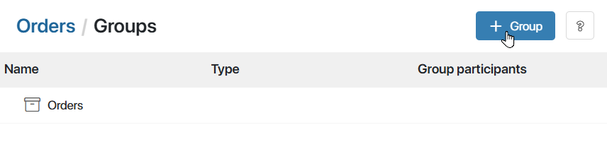
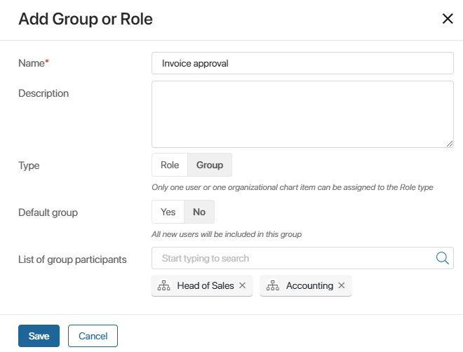
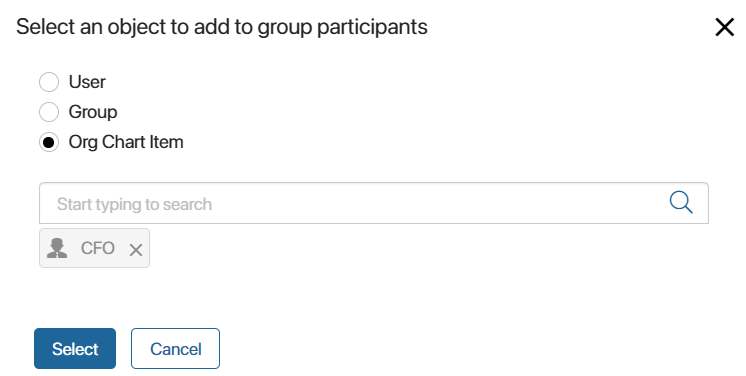
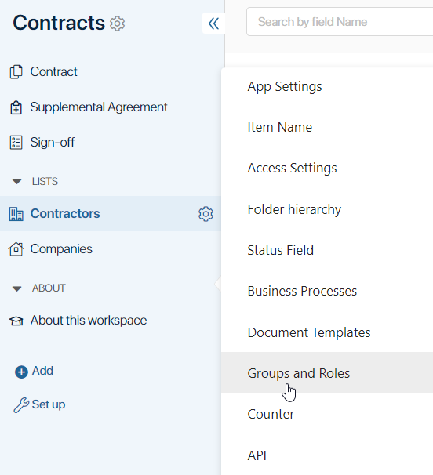
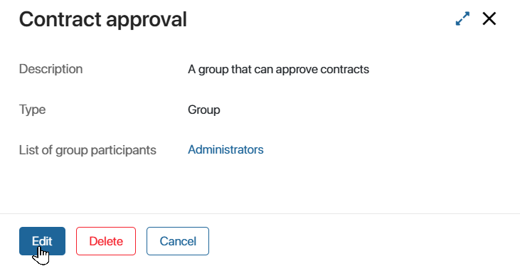
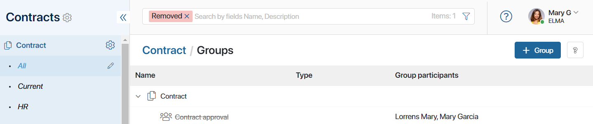

You can create user groups and assign users to roles in workspaces and apps.
With groups and roles, you can:
- Manage general access settings of a workspace or app.
- Set individual access settings for an app, its folders, or its app items.
- Define executors for a static swimlane in a business process.
начало внимание
Groups and roles created for an app cannot be used to set up access to a workspace.
конец внимание
Groups
When several employees perform similar tasks in an app or a workspace, you can unite them in a user group for easier access management.
Consider the following example. In the sales department, some employees work only with organizations and others only with individuals. You can create two user groups and grant one of them access to the Organizations app, and the other to the Individuals app of the Counterparties workspace. It is easier and faster than configuring access for each employee separately.
You can also use groups when modeling the company processes. Then process tasks will be assigned to users in the group you choose.
Roles
Roles work in a similar way as groups, but only one user or org chart item can be assigned to a role. When you export a workspace or an app, the role model is retained and it is easy to configure it for a new company by assigning the appropriate users or positions to the roles.
For example, in your company, all incoming documents are registered by the records manager. In another company, this work is performed by the secretary. In the Documents workspace, assign the records manager to the Document Registration role and set the necessary access permissions to the Letters, Agreements, and Certificates apps. When this workspace is imported to the second company, the secretary will be assigned to the Document Registration role instead of the records manager, but the access settings will remain the same.
If instead of using roles you assign access permissions to a specific employee and include them in business process tasks, these settings will not be saved when importing the workspace or app, and they will have to be configured again.
начало внимание
Only users included in the Administrators group can create and edit groups and roles in workspaces and apps.
конец внимание
Create roles and groups in a workspace
- Click the gear icon next to the workspace name and select Group Settings in the menu.
The list of groups and roles will open.
- To add a new group or role, click +Group in the right corner of the page.

- Fill out the fields:

- Name*. The name that will be displayed in the group list.
- Description. Describe the purpose of the group.
- Type. Select the type you want to create:
- Default group. If you select Yes, all new users will be automatically added to this group.
- List of group participants. Add specific users, groups, or org chart items to the list. To do that, either start typing the name of the user, group, or org chart item in the provided field or click the magnifying glass icon and select the required items in the opened window. One user can be included in several groups.

- When you fill out all the fields, click Save to apply the changes.
The group or role you created will appear in the list.
Creating groups and roles in an app
Click the gear icon next to the app name and select Groups and Roles.

The rest of the procedure is similar to creating a group or a role in a workspace.
Edit group settings
You can change the group data: name, description, and list of participants.The type defined at creation cannot be changed.
Go to the list of groups and click on a group or role name to open its page. Then click Edit.

In the editing window, you can make the necessary changes.
Delete a group
To delete a created group or role, open its page and click Delete. The deleted group will no longer be available in the general list of workspace or app groups, but you can restore it later.
If the deleted group is used in permission settings and business processes, these settings will still apply and you will see the deleted group in them. To revoke previously granted permissions, delete the group manually.
When you export an app or workspace, deleted groups are not exported.
To restore a deleted group:
- Display it in the list of workspace or app groups using the Removed filter in the search bar.

- Open the group page and click Restore.
Found a typo? Select it and press Ctrl+Enter to send us feedback